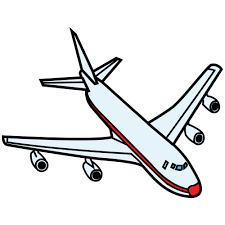

|  |
Aeropuerto Felipe Angeles
|
|
Acerca del Aeropuerto
El Aeropuerto Internacional Felipe Ángeles (Código IATA: NLU - Código OACI: MMSM), es un aeropuerto comercial que
sirve a la Zona metropolitana del valle de México. Fue realizado como parte de un sistema aeroportuario regional
que se complementa con el Aeropuerto Internacional de la Ciudad de México (AICM) y el Aeropuerto Internacional
Adolfo López Mateos de Toluca. El AIFA fue inaugurado el 21 de marzo de 2022.
Destinos disponibles del aeropuerto
Lugares turisticos a visitar en los destinos seleccionados
- New York
- Times Square
- Puente de Brooklyn
- Central Park
Pulse aquì para
màs información
- Guadalajara
- Circuito Turístico por Tlaquepaque
- Fábrica de Tequila
- Guadalajara en Calandria
Pulse aquí para más información
- Los Cabos
- Playa del Amor y el Arco
- Nado con Tiburón Ballena
- Outback & Camel Safari
Pulse aquí para más
información
- Londres
- London Eye
- Recorrido en autobús sube y baja
- Palacio de Buckingham
Pulse
aquí para más información